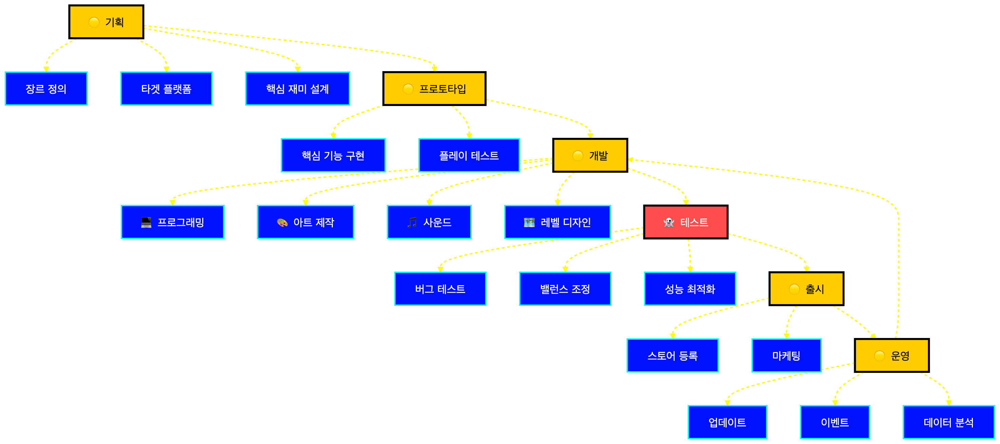

Workflow
게임 개발은 원래도 워크플로우 산업입니다
기획부터 운영까지, 대부분의 단계는 사실상 문서와 의사결정의 연속입니다.
14

왜 이 그림이 중요한가
게임 개발은 처음부터 끝까지 다층 워크플로우로 이루어져 있다.
각 단계는 물리 노동보다 지식 노동의 산출물에 가깝다.
그래서 문서화된 워크플로우가 있으면 AI가 실제 팀원처럼 참여할 여지가 커진다.